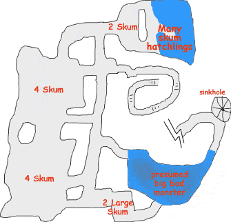

Chapter 12: Full Fungal Cleavage
 he instructors voice broke through the clamor of student conversations,
he instructors voice broke through the clamor of student conversations,
"Order, come to order! Enough with your prattle, I've something important to show you today."
With that, the senior assistant at the front of the room flung the covering off of a tall, silver mirror. Nearly four feet wide and twice as tall, its surface seemed to flow like quicksilver.
"Today we will set the Wayback Portal to just before the recovery of the second segment. Yes, Heordalin?"
"Do they know what it is at this point?"
"There is some scholarly disagreement on this, as in the Wayback Portal we see the gnome wizard give the occasional hint that he knew more than he would say. However it is my personal opinion that he simply tried to always give the impression of knowing more than he did, and in reality is quite clueless at this point. Any further questions? Allright then, the Portal will tune to a point where the group is mopping up a battle with four Driders."
[The satin surface of the Wayback Portal flows and distorts, looking remarkably like television static as it tunes in to the battle with the Driders.]
Is that
the Chaden Contarian, professor?
Yes, though her most famous exploits are yet to come, when she journeys east to the Isle of the Caliphate.
The Driders had attempted a sound strategy, with two of their number hanging back in the western tunnel while the other two stealthily moved through the eastern tunnel to surround the party. Chaden had taken a Cone of Cold in the back, but retaliated with a Hail of Stone which pummeled both Driders.
The Mirror Imaged Drider was in front and obviously spellcasting, but the second Drider finished its spell first. Shoving past its fellow the second Drider attempted to touch Sabrina, but the big cat lunged out of the way. The first Drider, somewhat miffed at being shoved aside, cast Acid Breath anyway. The acid engulfed Sabrina, Katriana, Chaden, and its fellow Drider! Chaden twisted and tumbled to find an outcropping of rock to duck behind. [Editor's note: Chaden has Evasion, and avoided all damage]
Is that
the Katriana, sir?
Yes, though her famous work in restoring Druidic magic to prominence occurred later, after her elevation as Archdruid.
Katriana conjured a Flaming Sphere, targetting the foe which had tried to hit Sabrina. The big cat turned and slashed, disembowling the Drider.
Meanwhile, the two Driders in the western tunnel were already dead, though six Phase Spiders remained. The spiders surrounding Edwin could not penetrate the Stoneskin. Edwin cast Chain Missile to target all of the spiders, and then the Earth Elemental killed one. Another spider phased out just as Grapthar swung at it. Grapthar's armor was blisteringly hot, the effect of a Heat Metal cast on him earlier in the battle.
"Now as you can see, they are working more or less individually and without coordination. They have not yet developed the close cooperation, the strict adherence to particular roles in combat and elsewhere, which made completion of this quest possible. Yes, Minaelough?"
"Why did the spider creature attack his companion?"
"The Spider creatures are Driders, which are Drow Elves transmogrified by evil magic. Drow and Driders are both extinct now, of course, but not in the time period we are watching. In a nutshell, the reason that Drider attacked his companion is that Driders were Chaotic Evil, and this means they sometimes they would attack each other."
Is that
the Grapthar?
Yes. This is shortly after his transformation into an avatar of Moradin, but before he realized the true extent of his potential.
Edwin further weakened the Phase Spiders with another Chain Missile, but one spider managed to score a critical hit sufficient to make it through his Stoneskin. Edwin's gnomish constitution resisted the poison. The Elemental landed a blow on the Spider facing it, and Grapthar finished another one off with two quick Axe strikes. His armor, though still painfully hot, had begun to cool.
The remaining Drider, protected by Mirror Image and apparently pleased with its effectiveness the previous round, cast Acid Breath again. Sabrina and Katriana were hit, but Chaden twisted out of the way to avoid damage.
Chaden cast Hail of Stone a second time, striking all of the Drider's mirrored images and dispelling them. Sabrina, who had already located the Drider by its smell, pounced and bit.
"Professor, why don't they use the wand?"
"Oh they do. The wand has healing powers, you see. After this battle is concluded they invoke the wand to help cure their injuries."
Is that
the Loremaster Edwin?
No, that Edwin resides on the Prime Material world known as Kulthea. This is just some wizard the other three brought along.
Edwin had used all high level spell slots. Magic Missile was still within his capability, wounding one of the Phase Spiders which Sabrina then killed. Katriana cast a healing spell on herself (which also healed Sabrina), as the two had been badly hurt by Acid Splashes. [Editor's Note: it was realized after the battle that Sabrina had Evasion and, like Chaden, could have avoided all damage.] Chaden killed the last Drider with a well-placed arrow.
Wizarding college of Leukish, far in the future
The images displayed on the quicksilver surface of the mirror fade away, leaving only the silvery metal.
"That's enough of that, I think. The Driders have been defeated, and though the Phase Spiders put up a good fight they were all disabled a few rounds later. Now, any opinions on the significance of what you have seen here?"
"Well... Sir... None that I can fathom. That looked like a party of adventurers on a dungeon delve. It did not seem like a great quest which changed the world."
"Indeed, and that was the point of the exercise. The three began as perfectly normal adventurers, and only gradually became aware of the great path before them."
"Sir, aren't there four adventurers?"
"Oh yes, I suppose there are four if you count the gnome."
The Narrator
Edwin cleaned and neatly stacked the various broken-off spider legs and mandibles, and then carefully excised the poison sacks from the Phase Spiders. That evening he distilled their contents to a sticky paste suitable for application on weapons. By speaking the command word RUAT the Wand healed some of the damage sustained by Edwin, Chaden, Katriana and Grapthar. Katriana's spells healed the rest.
The Driders possessed a great deal of treasure:
- a longsword of Drow manufacture, which radiated magic. [Editor's note: no one was certain whether Drow items disintegrate in sunlight, as they did in AD&D. If in D3.5 Drow items can be used aboveground Edwin will cast Identify]
- a ring of Spell Storing which currently contains Alter Self, Darkness, Read Magic, Shield, and Tenser's Floating Disc. All are caster level 8.
- a Necklace of Adaptation, which surrounds its wearer in a sheath of fresh air. They become immune to gas (like Cloudkill) and vacuum.
- 3 blue quartz, 10 gp each
- 11 yellow jasper, 50 gp each
- 10 blue moonstones, 50 gp each
- 10 yellow-green peridot, 50 gp each
- 2 green jade pieces, 100 gp each
- one black pearl worth 500 gp
- 28 platinum pieces
- 60 arrows divided between Chaden, Katriana and Grapthar
Chaden pocketed the gems, but turned over the platinum and magic items.
Grapthar and Chaden investigated the sinkhole, determining it to be a natural phenomenon. The party made camp for the night in one of the more easily defended rooms in the Drider lair. Edwin cast Greater Alarm, while Katriana cast Commune with Nature focusing on any bodies of water within range.
- a small body of water with no natural creatures living in it. Katriana believed this to be the wading pool in the caverns of the Skum.
- a larger body of water with a sandy area, containing eggs but no other natural creatures.
- a murky muddy pool in which a number of natural creatures swim.
The spell located no powerful unnatural creatures within range.

The next morning Edwin cast Mage Armor, Mass to cover the entire party, using the Lesser Metamagic Rod of Extend to make the spell last for 20 hours. He also renewed Darkvision for Katriana and Sabrina. Finally, he cast Arcane Eye.
The Eye raced down a natural spiral staircase and past a room filled with more Shriekers, emerging into another (much larger) cave complex inhabited by Skum. The tunnel continued past a large, muddy pool of water and thence onwards in the general direction indicated by the Wand.
Grapthar cast Silence on another coin, and strode in to destroy the Shriekers before moving on. With the certainty that only metagaming can provide, the adventurers believed that the muddy pool containted some sort of powerful denizen and began to power up.
Edwin: cast Haste
Grapthar: wearing the Necklace of Adaptation, cast Bless
Chaden: wearing the Ring of Spell Storing, cast True Strike and Accuracy
Katriana: cast Barkskin
Prev: Cold War |
Entrance |
Next: Violet Fungi is Not a Rock Band